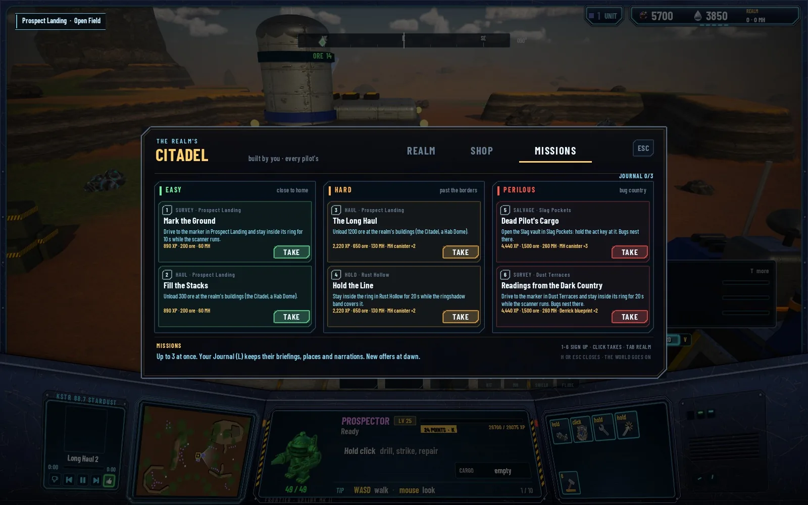
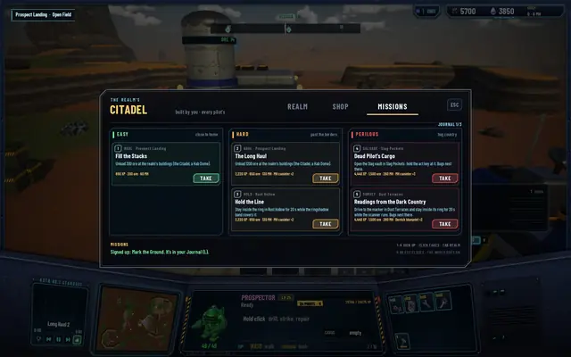
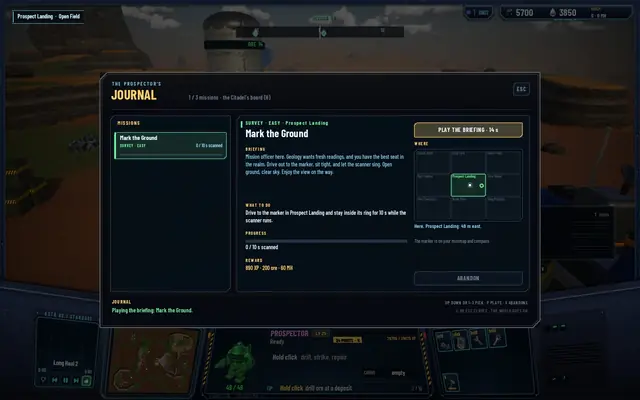
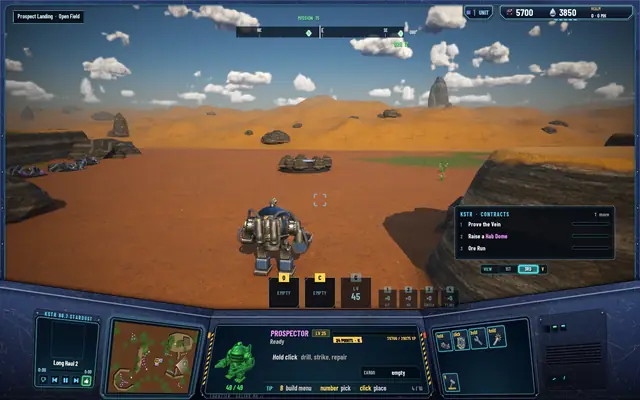
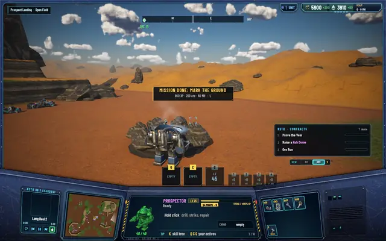

M8 · The realm under siege
Missions, the Journal and three voices
A pilot at level 10 asked the obvious question: now what? The Citadel answers it with a board of missions, and every briefing is read aloud by someone who sounds like they mean it.

The board
The Citadel's third tab is MISSIONS. It offers two missions in each of three tiers, and you can carry up to three at once. The tier says where you'll go: easy missions stay in your home region, hard ones send you into the next region over, perilous ones go to the far corners, where the bugs nest. The reward scales with the tier: an easy one pays about 8 minutes of your level's XP, a hard one 20, a perilous one 40, plus ore and MH.
There are five kinds of mission: survey (drive to a marker and hold still while the scanner runs), haul (bring ore or MH home to the realm's buildings), hold (stand in a ring while the ringshadow band passes over), salvage (open a sealed site) and hunt (kill bugs). The hunts stayed switched off until the bugs existed; they went live with the Brood later the same day.
The Journal
Press L and the Journal opens. Each mission you took has its briefing, what to do, your progress, the reward, and where it is on the map. The marker also shows on the compass and the minimap. And there's a button: PLAY THE BRIEFING.
Album · A mission from the board to done
- The board at the Citadel, Journal 0/3.

Signed up for Mark the Ground. It's in the Journal.
The Journal (L): briefing, what to do, 890 XP, 200 ore, 60 MH, and where.
Out to the marker. Open ground, clear sky.
MISSION DONE: the reward lands in the wallet.


Three voices
Every mission template has a narration, 16 in all, read by one of three voices picked by the mission's mood. The Citadel's mission officer gives the everyday jobs and sounds like someone who enjoys them. The Warden gives the holds and the hunts, grave and fearless. The perilous missions come over the radio from KSTR's night dispatcher, on a bad line, and the dispatcher is scared.
The lines were recorded with ElevenLabs once, ahead of time, levelled to the same loudness (-18 LUFS) and shipped with the game as sound files, so the game carries no API key. The text in the Journal is what the narrator reads, word for word. Listen:
The mission officer · Mark the Ground (easy)
"Mission officer here. Geology wants fresh readings, and you have the best seat in the realm. Drive out to the marker, sit tight, and let the scanner sing. Open ground, clear sky. Enjoy the view on the way."
The Warden · Thin the Swarm (hard)
"This is the Warden. The Brood is gathering beyond our borders, more of them every night. Cross over and break them before they break us. There is no glory in it. Only the work. Do it well."
KSTR dispatch · Into the Nest (perilous)
"Dispatch to pilot. Oh, no. They want a cull. In the far country, where the big ones are, where the Matriarch sings. Pilot, if it goes bad, you turn around. You hear me? Nobody's ore is worth your hide out there."
The missions sit beside KSTR's daily radio contracts, which stay. The suites after this task: 458 core tests, 177 server tests, 67 network tests, all passing. The narration was checked offline, as WAV files, since agents run the game silently.